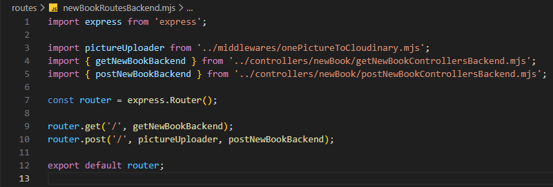

Új könyv felvétele - newBookRoutesBackend.mjs
Új könyv felvétele - newBookRoutesBackend.mjs

Ebben a részben szerkesztjük a routes mappában a newBookRoutesBackend.mjs állományt, amelyben összesítjük a CRUD műveletekhez tartozó logikákat.
-
Szerkesszük a
newBookRoutesBackend.mjsállományunkat.-
import express from 'express';- azexpressnpmcsomag beimportálása. -
import pictureUploader from '../middlewares/onePictureToCloudinary.mjs'- apictureUploaderfüggvény alapértelmezett importja. -
import { getNewBookBackend } from '../controllers/newBook/getNewBookControllersBackend.mjs';- agetNewBookBackendfüggvény nevesített importja. -
import { postNewBookBackend } from '../controllers/newBook/postNewBookControllersBackend.mjs';- apostNewBookBackendfüggvény nevesített importja. -
const router = express.Router();- mivel a webszerver jelölésére azappcsak aserver.mjsállományban használható, ezért itt már csak arouterszóval hivatkozhatunk rá, amit azexpressobjektumRouter()függvényével tehetünk meg. -
router.get('/', getNewBookBackend);- ahttp GET metódus-hoz tartozó logika hívása agetNewBookBackendfüggvény segítségével. -
router.post('/', pictureUploader, postNewBookBackend);- ahttp POST metódus-hoz tartozó logika hívása apictureUploadermiddlewareés apostNewBookBackendfüggvény segítségével. -
export default router;- a szerver hívás alapértelmezett kivitele.
-